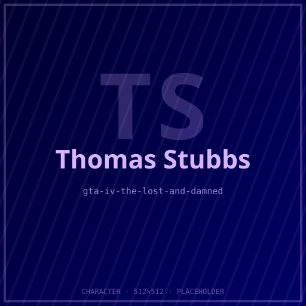

TLAD · Character
Thomas Stubbs
Corrupt congressman who pays the Lost for dirty work.

- role
- Politician
- affiliations
- Liberty City politics
- status
- Alive
Verified record
TLAD · Character
Corrupt congressman who pays the Lost for dirty work.

Verified record